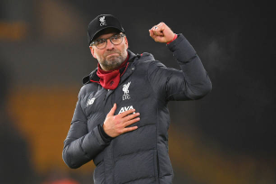

Players
MESSI
RONALDO
NEYMAR
SUAREZ
MBAPPE
Name : Lionel Messi
Age : 35
Current club : PSG
Nation : Argentina
Age : 35
Current club : PSG
Nation : Argentina
Messi is widely regarded as one of the greatest soccer players of all time. He has won numerous individual awards, including seven Ballon d'Or awards, which are given annually to the best male soccer player in the world. Messi has also helped his teams win multiple domestic and international titles, including the UEFA Champions League, La Liga, and the Copa del Rey.
Messi began his soccer career at a young age, joining the youth team of his local club, Newell's Old Boys. At age 13, he moved to Spain to join FC Barcelona's youth academy, La Masia.
Name : Cristiano Ronaldo
Age : 38
Current club : Al-Nasr
Nation : Portugal
Age : 38
Current club : Al-Nasr
Nation : Portugal
Ronaldo is known for his incredible speed, technical ability, and goal-scoring prowess. He has won five Ballon d'Or awards, which is given to the world's best player, and is the all-time top scorer in the UEFA Champions League. He has also won numerous other awards throughout his career, including the FIFA World Player of the Year award and the UEFA Best Player in Europe award.
In 2009, Ronaldo was transferred to Real Madrid for a then-world record fee of £80 million. He continued his success at Real Madrid, winning numerous titles including four Champions League titles and two La Liga titles.
Name : Neymar JR
Age : 31
Current club : PSG
Nation : Brazil
Age : 31
Current club : PSG
Nation : Brazil
Neymar Junior is a professional footballer from Brazil. He was born on February 5, 1992, in Mogi das Cruzes, Sao Paulo, Brazil. He is known for his speed, dribbling skills, and creativity on the field, and is widely considered to be one of the best players in the world.
Neymar began his professional career with Santos in Brazil, where he quickly gained attention for his skill and ability. He helped lead Santos to multiple titles, including the Copa Libertadores.He is also a key player for the Brazilian national team, helping them win the Olympic gold medal in 2016 and Copa America in 2019.
Name : Suarez Luis
Age : 36
Current club : Gremio
Nation : Uruguay
Age : 36
Current club : Gremio
Nation : Uruguay
Luis Suarez is a professional footballer from Uruguay. He was born on January 24, 1987, in Salto, Uruguay. He is known for his incredible goal-scoring ability, as well as his physical and technical skills on the field.
In 2014, Suarez transferred to Barcelona for a fee of £75 million. He helped lead Barcelona to multiple titles, including four La Liga titles and the Champions League in 2015. He formed a legendary attacking trio with Lionel Messi and Neymar, known as "MSN", which is widely regarded as one of the best attacking trios in football history.
Name : Mbappe Kylian
Age : 24
Current club : PSG
Nation : France
Age : 24
Current club : PSG
Nation : France
Kylian Mbappe is a professional footballer from France. He was born on December 20, 1998, in Bondy, a suburb of Paris, France. He is known for his incredible speed, technical skills, and goal-scoring ability, and is widely considered to be one of the best young players in the world.
Mbappe began his professional career with Monaco in France, where he quickly gained attention for his talent and ability. He helped lead Monaco to the Ligue 1 title in the 2016-2017 season, and also reached the semi-finals of the Champions League that same year.
Teams
Barcelona
 Real Madrid
Real Madrid
Man City
Bayern
PSG
League:BBVA
Founded : 1899
Stadium : Camp Nou
Country : Spain
Founded : 1899
Stadium : Camp Nou
Country : Spain
FC Barcelona, commonly referred to as just Barcelona or Barça, is a professional football club based in Barcelona, Catalonia, Spain. It was founded in 1899 by a group of Swiss, English, and Catalan footballers. The club has since grown to become one of the most successful football clubs in the world, with a rich history and a strong global following.
Barcelona has won numerous domestic and international titles, including La Liga, the Copa del Rey, the UEFA Champions League, and the FIFA Club World Cup. The club has also produced some of the world's greatest players, such as Lionel Messi, Xavi, Andrés Iniesta, Johan Cruyff, Ronaldinho, and many others.
League:BBVA
Founded : 1902
Stadium : Santiago Bernabeu
Country : Spain
Founded : 1902
Stadium : Santiago Bernabeu
Country : Spain
Real Madrid is a professional football club based in Madrid, Spain. It was founded in 1902 as Madrid Football Club and was later renamed as Real Madrid in 1920. Real Madrid is one of the most successful football clubs in the world, with a rich history and a global fanbase.
Real Madrid has won numerous domestic and international titles, including La Liga, the Copa del Rey, the UEFA Champions League, and the FIFA Club World Cup. The club has also produced some of the world's greatest players, such as Cristiano Ronaldo, Zinedine Zidane, Alfredo Di Stefano, Ferenc Puskas, and many others.
League:Premier League
Founded : 1820
Stadium : Etihad
Country : England
Founded : 1820
Stadium : Etihad
Country : England
Manchester City is a professional football club based in Manchester, England. It was founded in 1880 as St. Mark's (West Gorton) and later became Ardwick Association Football Club before adopting its current name in 1894. Manchester City is one of the most successful football clubs in England, with a rich history and a global fanbase.
Manchester City has won numerous domestic and international titles, including the Premier League, the FA Cup, the EFL Cup, and the UEFA Champions League. The club has also produced some of the world's greatest players, such as Sergio Aguero, David Silva, Yaya Toure, and many others.
League:Bundesliga
Founded : 1900
Stadium : Allianz Arena
Country : Germany
Founded : 1900
Stadium : Allianz Arena
Country : Germany
FC Bayern Munich, commonly referred to as just Bayern Munich or Bayern, is a professional football club based in Munich, Germany. It was founded in 1900 and has since grown to become one of the most successful football clubs in the world, with a rich history and a strong global following.
Bayern Munich has won numerous domestic and international titles, including the Bundesliga, the DFB-Pokal, the UEFA Champions League, and the FIFA Club World Cup. The club has also produced some of the world's greatest players, such as Franz Beckenbauer, Gerd Muller, Philipp Lahm, and many others.
League:League 1
Founded : 1970
Stadium : Parc des Princes
Country : France
Founded : 1970
Stadium : Parc des Princes
Country : France
Paris Saint-Germain Football Club, commonly referred to as PSG, is a professional football club based in Paris, France. It was founded in 1970 and has since grown to become one of the most successful football clubs in France, with a growing global fanbase.
PSG has won numerous domestic titles, including the Ligue 1, the Coupe de France, and the Coupe de la Ligue. The club has also made a strong impact in European football, reaching the UEFA Champions League final twice, in 2020 and 2021. PSG has also signed some of the world's best players, such as Neymar, Kylian Mbappe, and Lionel Messi.
Managers
Guardiola
Mourinho
Klopp
Ferguson
 Ancelotti
AncelottiName : Pep Guardiola
Age : 52
Current club : Man City
Nation : Spain
Age : 52
Current club : Man City
Nation : Spain
Guardiola is widely regarded as one of the greatest football coaches of all time, known for his innovative tactics, intense focus on possession-based football, and his ability to develop and motivate players to reach their full potential.
As a player, Guardiola spent most of his career playing for Barcelona, where he won numerous domestic and international titles, including six La Liga titles and the UEFA Champions League on two occasions. He also played for the Spanish national team, winning the Olympic Gold medal at the 1992 Barcelona Olympics.
Name : Jose Mourinho
Age : 60
Current club : Roma
Nation : Portugal
Age : 60
Current club : Roma
Nation : Portugal
Real Madrid is a professional football club based in Madrid, Spain. It was founded in 1902 as Madrid Football Club and was later renamed as Real Madrid in 1920. Real Madrid is one of the most successful football clubs in the world, with a rich history and a global fanbase.
Real Madrid has won numerous domestic and international titles, including La Liga, the Copa del Rey, the UEFA Champions League, and the FIFA Club World Cup. The club has also produced some of the world's greatest players, such as Cristiano Ronaldo, Zinedine Zidane, Alfredo Di Stefano, Ferenc Puskas, and many others.

Name : Jurgen Klopp
Age : 55
Current club : Liverpool
Nation : Germany
Age : 55
Current club : Liverpool
Nation : Germany
Klopp is known for his high-energy, pressing style of football, and his ability to build strong team spirit and motivation among his players. He is highly respected by his peers and fans alike for his passion for the game and his charismatic personality. Klopp has also been involved in several social and charitable initiatives, including supporting food banks and campaigning for better mental health support for players.
As a player, Klopp spent most of his career playing for Mainz 05 in the German second division, where he played as a striker. He retired from playing in 2001 and immediately transitioned into coaching, taking over as head coach of Mainz 05.
Name : Alex Ferguson
Age : 81
Current club : None
Nation : Scotland
Age : 81
Current club : None
Nation : Scotland
Sir Alex Ferguson was knighted in 1999 for his services to football, and has been awarded numerous other honors and awards throughout his career. Since retiring from coaching in 2013, he has been involved in several charitable initiatives and has also published several books about his life and career in football.
Ferguson began his playing career with several Scottish clubs before becoming a full-time manager at East Stirlingshire in 1974. He then moved on to coach several other Scottish clubs before taking over at Aberdeen in 1978, where he won three Scottish Premier League titles and the UEFA Cup Winners' Cup in 1983.
Name : Carlo Ancelotti
Age : 63
Current club : Real Madrid
Nation : Italy
Age : 63
Current club : Real Madrid
Nation : Italy
Ancelotti is known for his calm and composed demeanor on the sidelines, his tactical flexibility, and his ability to manage some of the biggest egos in football. He has won numerous domestic and international titles throughout his career and has earned the respect and admiration of many of his peers and players alike.
Ancelotti began his coaching career in 1995 as the head coach of Reggiana, before moving on to coach several other Italian clubs, including Parma, Juventus, and AC Milan. He won two Serie A titles and two UEFA Champions League titles as the head coach of AC Milan, establishing himself as one of the most successful coaches in Italian football history.
N-Teams
Brazil
Argentina
France
England
Italy

FIFA Rating : 1840
World Cup : 5
World Cup : 5
Brazil is one of the most successful football nations in history, having won the FIFA World Cup a record five times. The Brazilian national team is known for its distinctive style of play, which emphasizes skillful dribbling, creative attacking play, and a flair for improvisation.
Brazilian football has a rich history, with some of the greatest players in football history hailing from the country. Pele, widely considered to be one of the greatest players of all time, won three World Cup titles with Brazil in 1958, 1962, and 1970. Other legendary Brazilian players include Zico, Ronaldo, Ronaldinho, and Neymar.
FIFA Rating : 1838
World Cup : 3
World Cup : 3
One of the most iconic Argentine players is Diego Maradona, who is widely considered one of the greatest football players of all time. Maradona led Argentina to their second World Cup triumph in 1986, scoring one of the most famous goals in history, the "Hand of God" goal, in the quarter-finals against England.
Other legendary Argentine players include Lionel Messi, who has won numerous individual awards and has been instrumental in Argentina's recent successes, as well as Gabriel Batistuta, Juan Roman Riquelme, and Diego Simeone.
FIFA Rating : 1823
World Cup : 2
World Cup : 2
France is a significant footballing nation, having won the FIFA World Cup twice, in 1998 and 2018, as well as the UEFA European Championship twice, in 1984 and 2000. The French national team is known for its talented players and its success in major international tournaments.
France has also produced many successful and iconic football players, such as Zinedine Zidane, Michel Platini, Thierry Henry, and Antoine Griezmann. Zidane is considered one of the greatest footballers of all time and was a key player in France's 1998 World Cup win.
FIFA Rating : 1774
World Cup : 1
World Cup : 1
England is one of the most important footballing nations in the world, with a rich history in the sport. The England national team won the FIFA World Cup in 1966 and has reached the semi-finals of major international tournaments on several occasions. The team is known for its physical and direct style of play, with an emphasis on set pieces and counterattacks.
The country has also produced many successful and iconic football players, such as Bobby Charlton, Gary Lineker, David Beckham, and Wayne Rooney. Many of these players have also had successful careers in club football, both domestically and internationally.

FIFA Rating : 1723
World Cup : 4
World Cup : 4
Italy is a footballing nation with a rich history and tradition in the sport. The Italian national team has won the FIFA World Cup four times, most recently in 2006, and has also won the UEFA European Championship once, in 1968. The team is known for its defensive solidity and tactical sophistication, with a focus on possession-based football.
Italy has also produced many successful and iconic football players, such as Paolo Maldini, Gianluigi Buffon, Andrea Pirlo, and Francesco Totti. Many of these players have had successful careers in club football, both domestically and internationally.
Competitions
World Cup
EURO
Champions League
Europe League
Nations League
Participants : 48
Current Winner : Argentina
Current Winner : Argentina
The FIFA World Cup is the biggest and most prestigious international football tournament in the world. It is held every four years and involves national teams from all over the world. The tournament consists of a group stage followed by knockout rounds, with the winner being crowned the world champion.
Overall, the FIFA World Cup is the pinnacle of international football and represents the highest level of competition in the sport. It is a celebration of footballing culture and talent from around the world, and brings together people from all over the globe in a shared love of the beautiful game.
Participants : 24
Current Winner : Italy
Current Winner : Italy
If you're referring to the UEFA European Championship, commonly known as the UEFA EURO or simply EURO, it is a men's football (soccer) tournament contested by the national teams of the member associations of the Union of European Football Associations (UEFA). The tournament is held every four years and is one of the most prestigious international football competitions, second only to the FIFA World Cup.
Spain has won the tournament three times (in 1964, 2008, and 2012), while Germany and France have each won it twice. Other past winners include Italy, Portugal, the Netherlands, Denmark, Greece, and the former Soviet Union.
Participants : 32
Current Winner : Real Madrid
Current Winner : Real Madrid
The UEFA Champions League, also known simply as the Champions League, is an annual football club competition organized by the Union of European Football Associations (UEFA). The tournament is one of the most prestigious club competitions in the world, featuring the top football clubs from the national leagues of Europe.
The Champions League was first held in the 1955-56 season as the European Cup, and it was renamed the Champions League in 1992. The competition consists of several stages, including a group stage and knockout rounds, culminating in a single-match final.
Participants : 32
Current Winner : Eintracht
Current Winner : Eintracht
The UEFA Europa League, commonly referred to as the Europa League, is an annual football club competition organized by the Union of European Football Associations (UEFA). The tournament is the second-tier club competition in Europe, after the UEFA Champions League.
The Europa League was first held in the 1971-72 season as the UEFA Cup, and it was renamed the Europa League in 2009. The competition features football clubs from the national leagues of Europe, and it is contested by teams that finish high enough in their domestic league to qualify for the tournament.
Participants : 55
Current Winner : Portugal
Current Winner : Portugal
The UEFA Nations League is a biennial international football competition organized by the Union of European Football Associations (UEFA). The tournament was first held in 2018 and is designed to replace friendly matches with competitive fixtures between national teams.
The Nations League consists of all 55 UEFA member associations, divided into four leagues (A, B, C, and D) based on their rankings. Each league is further divided into groups, with each group consisting of three or four teams. The teams in each group play each other home and away in a round-robin format.